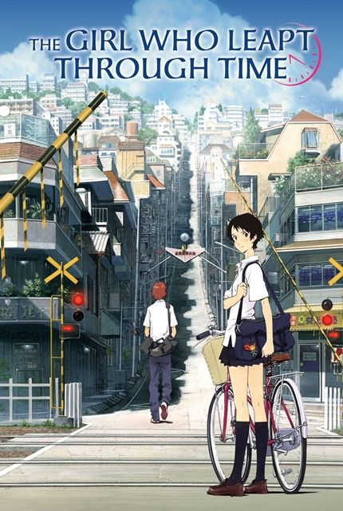

Hello! My name is Kayla Wicke and I love Anime. For this project I'm going to show my top 5 anime shows and top 5 anime movies.
My Top 5 Anime TV Shows:
1. Beyond the Boundary
Beyond the Baundary follows a girl named Mirai whom is the last surviving Spirit World warrior from a special clan with the ability to minipulate their own blood into weapons. Mirai has a mission to kill a boy named Akihito, a half-breed of human and youmu. Youmu are demon-like creatures thought to be manifested from negative human emotions. One day while Mirai was on the school roof, she comes across Akihito and immediately stabs him in the chest with her blood sword, only to find that he is an immortal being. The two of them form a sort of friendship where Mirai is constantly trying to kill Akihito. Their time together soon becomes a fight for survival as the most powerful youmu, Beyond the Boundary, is released.
2. The Seven Deadly Sins
The Seven Deadly Sins follows Princess Elizabeth of Liones as she escapes the castle and adventures out to find the so-called "Seven Deadly Sins". A few Holy Knigts are secretly trying to take over the Kingdom of Liones and Elizabeth believes that the Seven Deadly Sins are the only ones who can kill them.
3. Blue Exorcist
Satan somehow falls in love with a human girl and they have twins together. Sadly the girl died soon after the children were born. The chindren, however, were picked up and raised in secrecy by an exorcist name Shirou Fujimoto. One of the twins, Rin, was born with blue flames, the sign of Satan, and the other was not. It wasn't until they were 16 that Satan tried to come back to Assiah, using Shirou as a host body. From this, the twins figured out who they really were and are now going to a really good school to become exorcists.
4. Blood Lad
Rumors say that Staz Charlie Blood is a vicious vampire that rules the Eastern District of the Demon World. In reality, he is actually just an otaku really obsessed with Japanese coulture. When a Japanese human girl, Fuyumi, accidentally goes through a portal that lead to the demon world, Staz was excited. As he ried to get to know Fuyumi, his territory was being attacked which lead up to the death of Fuyumi. From this, she turned into a ghost and Staz vowed to try to resurrect her as this meant that he'd get to travel to the human world. Joined by a few allies, Staz and Fuyumi travel around the Demon world, trying to ressurect Fuyumi.
5. Gargantia
(sorry for the blurry pic)
In a distant future most humans have left the Earth and joined the Galactic Alliance of Humanity. The Galactic Allaiance ran into a big threat in space, strange creatures in space called Hideauze. This resulted in an all out war against them. while 16-year-old lieutenant Jedo of the Galactic Alliance was fighting against the Hideauze, an unfortunate event happens and everyone was forced to retreat. Before he got away, he lost control of Chamber, his autonomous robot, and is cast out towards earth, which is noe completely flooded over with water. He is found by Gargantia, a large fleet of scavenging ships, thinking they had found something of great value. After Ledo finally woke up he went out of Chamber and began to explore the ship, taking a girl named Amy hostage in the process, as he had mistook everyone for bad guys. After a while, when things had settled, Ledo figures out that he might not ever be able to go back to the Galactic Alliance. Now he has to adjust to this new life without wars.
My Top 5 Anime Movies:
1. Your Name
Mitsuha, a high school girl, dreams of living a live of a boy in the big city of tokyo, opposite from her normal life in the countryside. Meanwhile in the city of Tokyo, Taki lives a full and busy life as a high school student while also rushing about his part-time job, hoping for a future in architecture. One day Mitsuha wakes up to see that she was in a whole different place. Now she was in Tokyo, in Taki's body, while Taki finds himself in Mitsuha's body. Looking for an answer for this strange happening, they adventured out looking for one another.
2. A Silent Voice

As a young child in elementery school, Shouya Ishida was an energetic child and also a bully. When Shouko Nishimiya, who was deaf, transfers into his class, Shouya and the rest of the students bullyed her without thinking. When Shouko's mother notified he school about it, Shouya is singled out and blamed for it all. After Shouko transfered out of the school, Shouys is left an outcast, hated by all his friends. Later in his theird year of high school, Shouya still deeply regrets what he did and now plans to look for Shouko and make up for all that he did.
3. The Boy and the Beast
This anime is a story of a boy and a beast who are both stubborn, lonely, and strong. After hearing that his mom had passed away, nine-year-old Ren, ran away from home and tried to survive on his own. Back in the beast realm, Kumatetsu is one of the strongest there is, but he is not really liked or respected. When the Lord of Shibuten decieded to retire and become a god, Kumatestu and Lord Iouzan are the two candidates to take his place. But Kumatestu is very anti-social and has never has a disciple for very long. Until he can prove that he can have and train one of his own, he can not be considered a real contender. When Ren gets lost in a maze-like ally, he stumbles acros the strange land of Shibuten. Soon, Kumatetsu finds him and decides to take him in as a disciple.
4. The Girl Who Leapt Through Time

Makoto konno, a high schooler, is having a hard time deciding what to do with her future. Though, her life suddenly changes when she finds out that she is able to literally leap through time. However, Makoto soon learns that every choice has a consequence and that time is more complicated than she thinks
5. Wolf Children
Hana, a college student, falls in love with a mysterious man who attends one of her classes even though he's not an actual student. Once they get to know eachother, the man reveals that he's not actually a human but the last warewolf alive. Hana doesn't mind this as her love for the man ramains and the two decided to start a family. Later, Hana gives birth to two children, Ame and Yuki, both possessing the ability to turn into wolves. soon after Ame was born, the father passed away and Hana was left devistated. She was now challenged to raise two wild-natured children in a big city with keeping their identities hidden. After a while, she decides to move out to the countryside.